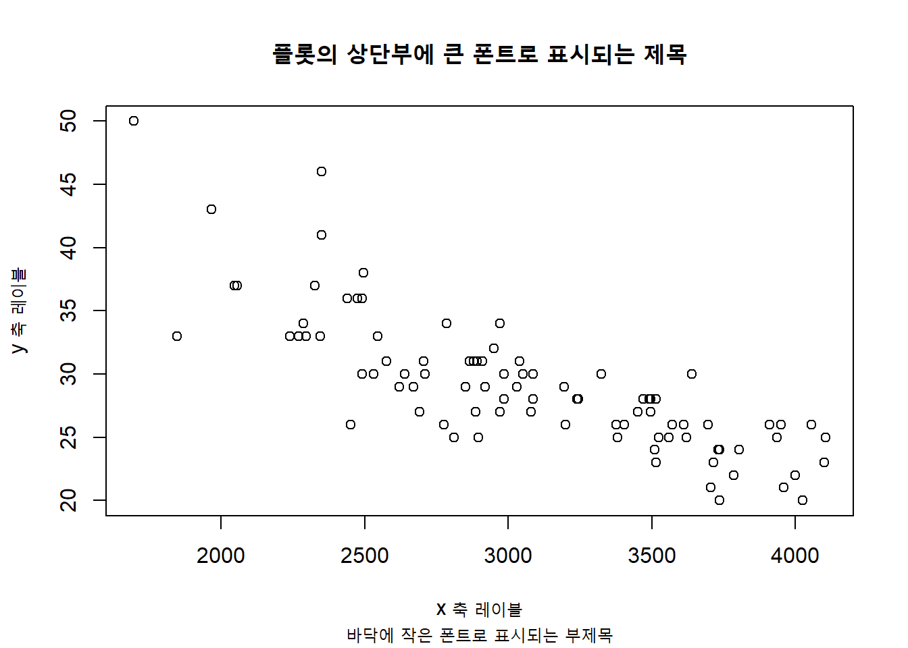
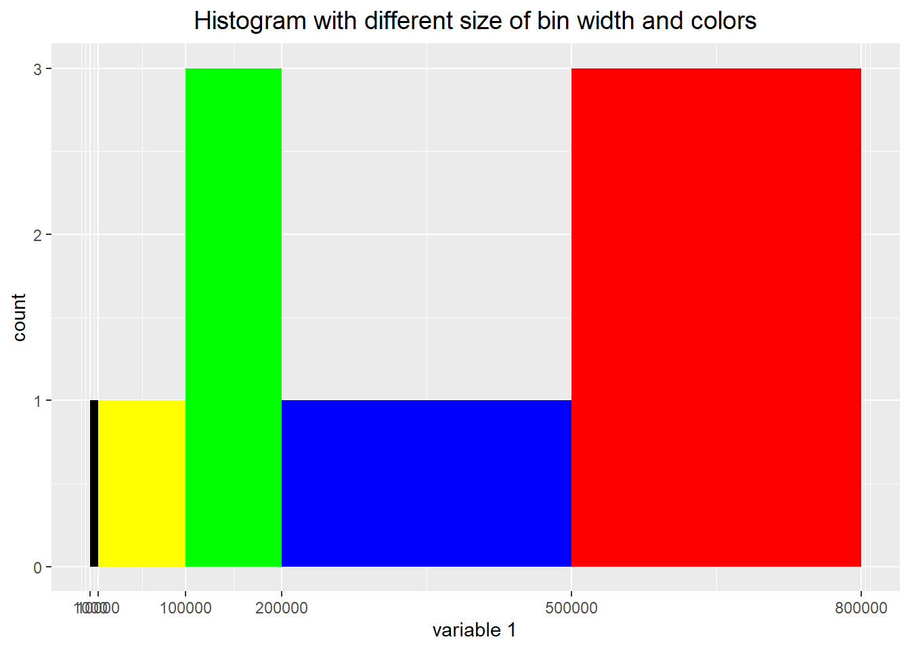
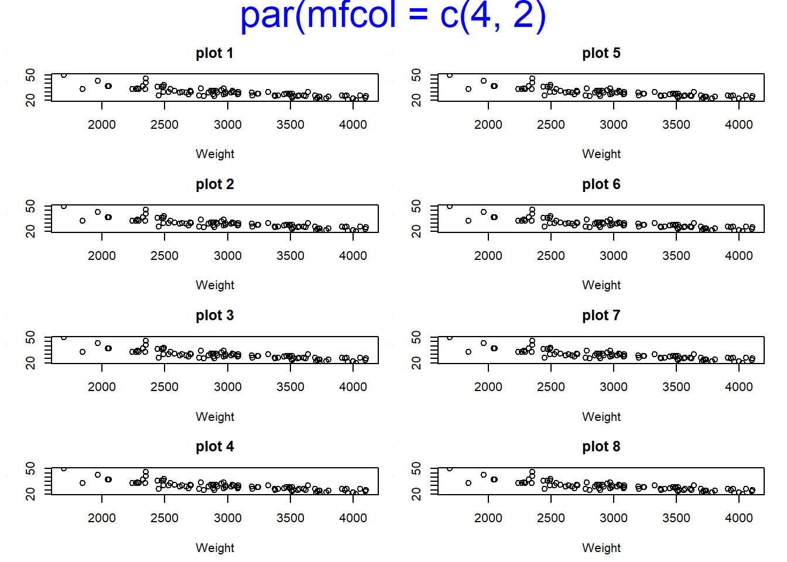
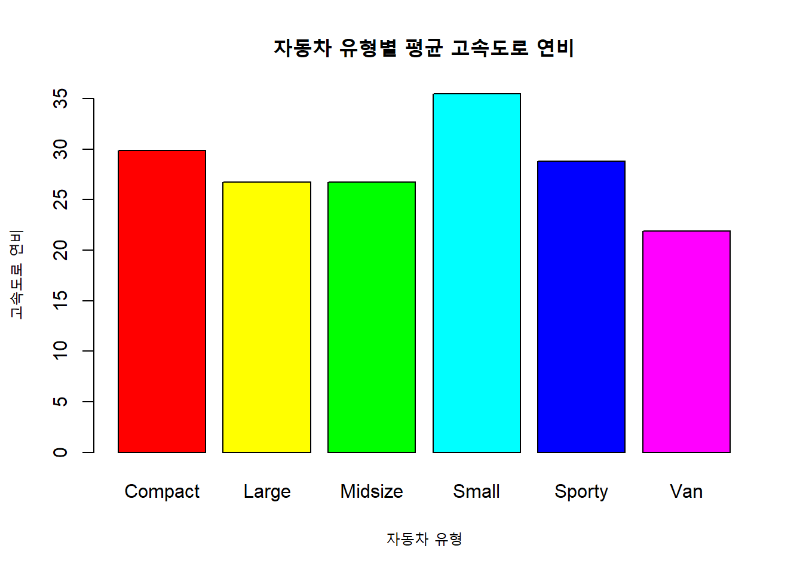

5.1 제목 및 XY축 라벨 추가 :title()
높은 수준의 그래프 함수로 그래프의 골격을 만들수 있고, 그래픽 모수로 기호 모양이나 색, 크기 등을 설정할 수 있는데요, 이것 만으로는 원하는 그래프를 만드는데 부족함이 있습니다. 가령 그래프 제목을 추가하고 싶거나, 선이나 점을 추가하고 싶거나, 문자나 범례를 추가하고 싶다거나, XY축을 변경하고 싶을 때가 있는데요, 이때 추가적인 정보를 입력하기 위해 사용하는 것이 ’낮은 수준의 그래프 함수 (Low level graphic functions)’가 되겠습니다.
높은 수준의 그래프 함수로 만약 plot(x, y, **type = "n"**) 으로 하면 그래프 창만 열리고 plot area 안에는 빈 공간만 있게 되는데요, 여기에 낮은 수준의 그래프 함수로 그래프 기호, 선, 점, 범례 등을 추가해나갈 수도 있습니다.
이번 포스팅부터 수차례로 나누어서 낮은 수준의 그래프 함수(Low level graphic functions)에 대해서 차례대로 알아보도록 하겠습니다.
[ 낮은 수준의 그래프 함수 (Low level graphic functions) ]
Figure 5.2: 낮은 수준의 그래프 함수 : 제목과 XY축 라벨
먼저 (1) 그래프 제목(main/sub title) 및 XY축 라벨(XY axis label) 추가하는 방법으로 title() 함수에 대해서 소개해보겠습니다. title() 함수에 사용하는 옵션으로는 주 제목 main, 부 제목 sub, X축 라벨 xlab, Y축 라벨 ylab 등이 있습니다.
title(main = "main title to the top of plot in a large font",
sub = "sub-title sub at the bottom in a smaller font",
xlab = "x axis label",
ylab = "y axis label")이전 포스팅에서 소개했던 높은 수준의 그래프 함수, 즉 hist(), boxplot(), barplot(), plot() 등의 함수 안에서도 주 제목, 부 제목, X축 라벨, Y축 라벨을 직접 지정할 수 있는데요, 아래 예가 높은 수준읙 그래프 함수로 그린 그래프입니다.
##----------------------------------------------
## adding main/sub title, XY axis label
##----------------------------------------------
library(MASS) # to use Cars93 dataframe
# method (1) high level graphic functions : plot()
plot(MPG.highway ~ Weight, Cars93,
main = "main title : scatter plot of Weight, MPG.highway",
sub = "sub title : plotting with high level graphic functions",
xlab = "x label : Weight",
ylab = "y label : MPG.highway")
위의 그래프와 똑같은 그래프를 낮은 수준의 그래프 함수를 사용해서 그려보겠습니다. 먼저 높은 수준의 그래프 함수로는 “ann = FALSE” 옵션을 추가해서 기본 뼈대만 그려보겠습니다. 아래 그래프를 보시면 주 제목, 부 제목, X축 라벨, Y축 라벨이 하나도 없음을 알 수 있습니다.
# tmheod (2) low level graphic functions : title()
# deleting X and Y labels : ann = FALSE
plot(MPG.highway ~ Weight, Cars93, ann = FALSE)
위의 기본 뼈대만 있는 그래프에 낮은 수준의 그래프 함수(Low level graphic function)를 사용해서 부가정보를 더해보도록 하겠습니다.
plot(MPG.highway ~ Weight, Cars93, ann = FALSE)
# adding main title, sub title, x label, y label
title(main = "main title : scatter plot of Weight, MPG.highway",
sub = "sub title : plotting with low level graphic functions",
xlab = "x label : Weight",
ylab = "y label : MPG.highway")
높은 수준의 그래프 함수에서도 주 제목, 부 제목, XY축 Label 등을 설정할 수 있는데 왜 굳이 낮은 수준의 그래프 함수 title() 을 가지고 추가 정보를 입력하는지 의아할 수도 있겠습니다. 높은 수준의 그래프 함수 중에 부가정보를 입력할 수 없는 그래프 함수도 있으며, R의 장점 중에 하나가 대화형으로 그래프의 부가 정보를 차곡 차곡 쌓아가면서, 눈으로 확인해가면서 그릴 수 있어서 굉장히 직관적으로 탐색적 데이터 분석을 할 수 있다는 점입니다.
참고로, 지난번 포스팅에서 소개한 그래프 모수 (graphics parameters) 중에서 기호의 크기를 설정하는 “cex.main =,” “cex.sub =,” “cex.lab =” 옵션을 사용해서 주 제목, 부 제목, XY축 Label의 크기를 변경해보겠습니다.
# modification of font size : cex.main, cex.sub, cex.lab
# deleting X and Y labels : ann = FALSE
plot(MPG.highway ~ Weight, Cars93, ann = FALSE)
# adding main title, sub title, x label, y label
title(main = "main title with cex 2.2",
sub = "sub title with cex 1.5",
ylab = "y label with cex 1",
cex.main = 2.2, # main title size
cex.sub = 1.5, # sub title size
cex.lab = 1) # x and y label size
다음 포스팅에서는 낮은 수준의 그래프 함수 - (2) XY축 형태 변환 : axis(side, …) 에 대해서 알아보도록 하겠습니다.